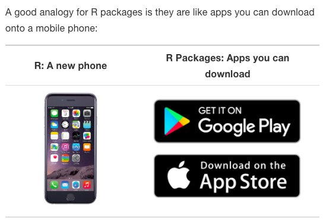

knitr::include_graphics(here::here("image", "trans.png"))
knitr::include_graphics(here::here("image", "trans.png"))
Attractive features of R are:
knitr::include_graphics(here::here("image", "appstore.png"))
tidyverseThe tidyverse is a collection of R packages that share common philosophies and are designed to work together.
knitr::include_graphics(here::here("image", "tidyverse.png"))
readr and haven%>%knitr::include_graphics(here::here("image", "pipe.jpg"))
tidyrknitr::include_graphics(here::here("image", "tidy.png"))
dplyrThe Six Main Verbs (6MV) of data wrangling
filter()== to compare a variable to a value.| to check for any in multiple filters being true., to check for all of multiple filters being true.%in% to check for any being true (shortcut to using | repeatedly with ==)select(): a range of consecutive variables. -starts_with(): variables Starts with a prefix. -ends_with(): variables ends with a suffix. -contains(): Contains a literal string.summarize()summarize().summarize() with group_by()When you’d like to determine a numerical summary for all levels of a different categorical variable
mutate()arrange()gtsummary Package